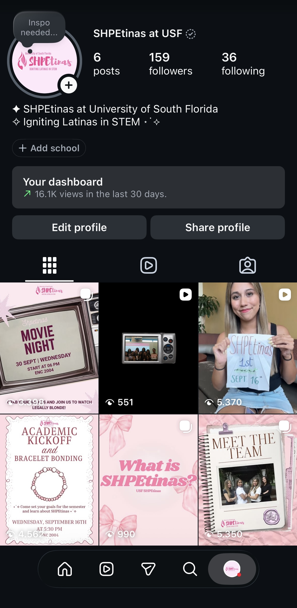
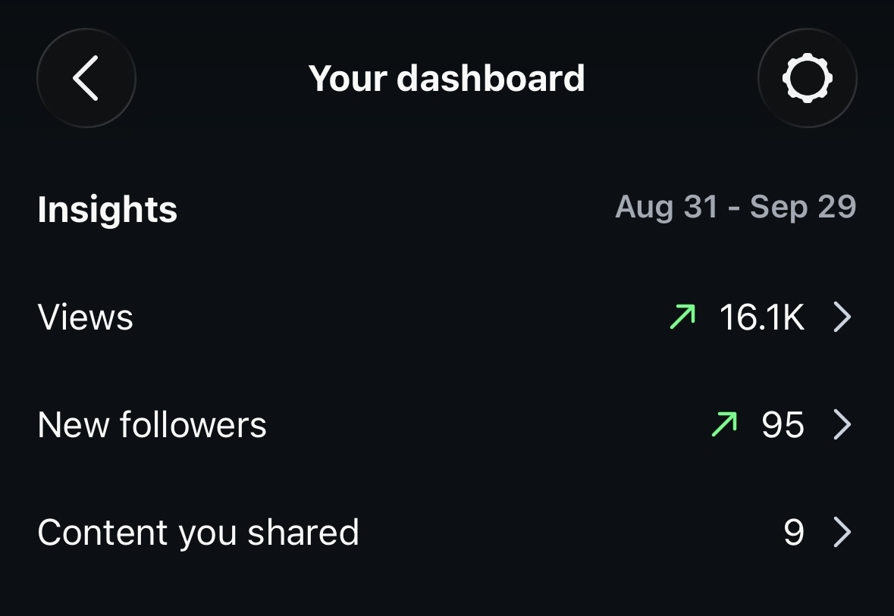

MARKETING · SOCIAL MEDIA
SHPEtinas
Marketing and social media work focused on building community, creating content and strengthening the organization's online presence.
01 — MY ROLE
Marketing Director
As Marketing Director of SHPEtinas, I manage the organization's Instagram presence and contribute to how the organization communicates with its audience.
My work involves creating and organizing content, supporting the organization's visual presence and helping communicate SHPEtinas' activities and events through social media.
02 — SOCIAL MEDIA
Building an online presence.
Instagram is an important platform for sharing SHPEtinas' activities, connecting with students and communicating information about the organization.

03 — CONTENT STRATEGY
Content that connects the community.
The social media content focuses on communicating the organization's activities while creating an engaging online presence for its audience.
Events
Sharing information and visual content surrounding SHPEtinas events.
Community
Highlighting the people and experiences that make up the organization.
Social Media
Creating content designed specifically for Instagram.
Communication
Helping communicate the organization's activities and opportunities.
04 — RESULTS
Instagram Insights
The account's Instagram insights provide a snapshot of the audience reached and content shared during the period shown below.

16.1K
Views
95
New followers
9
Contents shared
05 — LEADERSHIP & LEARNING
What this experience has taught me.
Working in marketing for SHPEtinas has given me experience managing a real organization's social media presence while collaborating with other members of the organization.
It has also allowed me to develop my understanding of content creation, communication and the role marketing plays in building a community.